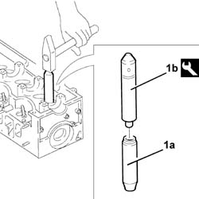
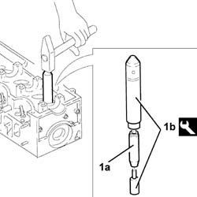

1016E14 Valve guides for single cylinder head - Replace during Op. 1016E10
- Path
- Procedures > 10 ENGINE > 1016 CYLINDER HEAD(S) > 1016E CYLINDER HEAD/S - VARIOUS OPERATIONS > 1016E14 Valve guides for single cylinder head - Replace during Op. 1016E10
- Kind
- repair procedure (removal / refitting; the operation number is the code)
- Applies to
- engines: 2.4 JTD 10V; all production periods
- Interactive page
- https://sloeber94.github.io/elrnDB-lThss/en/#/498077
Applies to: engines: 2.4 JTD 10V; all production periods
 Removing
Removing
 Refitting
Refitting1. Remove the valve guides (1a) using the tool (1b).
 | Description | Code | Function |
|---|---|---|---|
1b | Extractor | 1.860.395.001 | Valve guide extraction |

Applies to: engines: 2.4 JTD 10V; all production periods
Refitting
Removing- Check that the outer diameter of the valve guides to be fitted corresponds to the recommended figures.
 | Subject | Value |
|---|---|---|
. | Valve guides | mm |
- | Outer diameter | 14.010 ÷ 14.030 |
| Subject | Value |
|---|---|---|
. | Valve guides | mm |
- | Outer diameter oversize | 0.05 |
- | Outer diameter oversize | 0.10 |
| Subject | Value |
|---|---|---|
. | Valve guides | mm |
- | Outer diameter oversize | 0.20 |
- | Outer diameter oversize | 0.25 |
1. Fit the new valve guides (1a) using the tool (1b).
| Description | Code | Function |
|---|---|---|---|
1b | Fitting tool | 1.860.812.000 | Valve guide fitting |

Applies to: engines: 2.4 JTD 10V; all production periods
- Ream the valve guide inner diameter to the recommended figure.
| Subject | Value |
|---|---|---|
. | Valve guides | mm |
- | Inner diameter | 8.022 ÷ 8.040 |